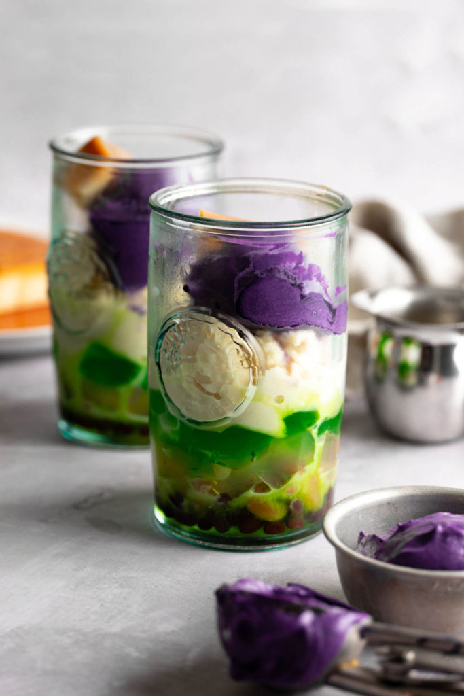

Halo Halo

Description
The ultimate Filipino summertime treat, halo-halo (ha-loh – ha-loh) is a delicious way to cool down.
This vegan halo-halo layered with a bunch of things, such as sweet beans, jelly, fruits, shaved ice and drizzled with milk.
Let’s not forget the best parts, the toppings, ube ice cream, and Leche flan!
Ingredients
- 1 cup (240ml) – milk
- 1 tbsp – sugar
- 1 tbsp – coconut condensed milk
- Sweet red bean (munggo)
- Sweet white beans
- Coconut gel (Nata de coco)
- Macapuno strings or freshly grated coconut
- vegan pandan jelly (gulaman)
- Non-dairy milk
- Coconut condensed milk
- vegan Leche flan (creme caramel)
- vegan ube ice cream
- Optional: Premade halo-halo mix
Steps
- Layer the sweet red beans, sweet white beans, coconut gel, macapuno strings, and pandan jelly in a tall glass.
- Next, remove the frozen milk from the freezer and crush it up in the bag. I like to use the end of a wooden spoon to do this, or if you’re strong enough if you crush it with your hands!
- Crush the frozen milk until you get a soft texture that resembles shaved ice, and add it into your glass until it reaches the rim. If you have a shave ice machine, you can skip this step.
- Pour some non-dairy milk over top and some coconut condensed milk.
- Add a scoop of ube ice cream and a slice of Leche flan. Serve immediately!